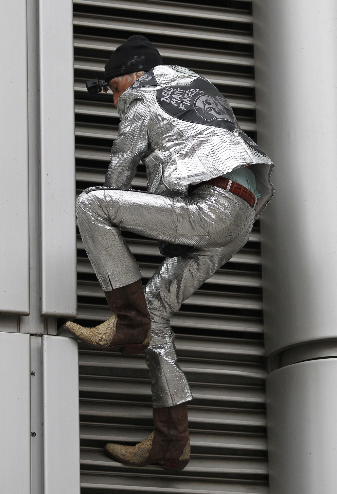

Viele Wege.
Ein Ziel: der Silberturm.
Zu Fuß durch Frankfurts Bahnhofs & Bankenviertel.
Der Silberturm in Frankfurt am Main befindet sich in zentraler Lage im bekannten Bankenviertel, am Jürgen‑Ponto‑Platz 1.
Nur wenige Gehminuten vom Frankfurter Hauptbahnhof entfernt, ist das Hochhaus hervorragend erreichbar – sowohl zu Fuß als auch mit öffentlichen Verkehrsmitteln.
Die Nähe zur Taunusanlage, zum Mainufer sowie zu wichtigen Straßen wie der Kaiserstraße und der Taunusstraße macht den Standort besonders attraktiv.
Auch kulturelle Highlights wie die Alte Oper oder das Städel Museum befinden sich in unmittelbarer Umgebung.
Dank seiner zentralen Lage und der optimalen Anbindung an S‑Bahn, U‑Bahn und Straßenbahn zählt der Silberturm zu den wichtigsten Bürostandorten in Frankfurt und ist ein markanter Bestandteil der Frankfurter Skyline.

Architektur
Der Silberturm (ehemals Dresdner-Bank-Hochhaus) ist ein Bürohochhaus im Stil der Moderne beziehungsweise des Funktionalismus. Das Gebäude zeichnet sich durch seine zylindrische Grundform aus und prägt mit seiner markanten Architektur die Frankfurter Skyline. Seine Gestaltung folgt den Prinzipien einer funktionalen und klaren Formensprache, die typisch für die moderne Hochhausarchitektur ist.
- Bauzeit & Fertigstellung: 1975-1978
- Architekten: ABB Architekten: Apel, Beckert, Becker
- Gesamtmietfläche: 51.593 m²
- Büromietfläche: 42.884 m²
- Höhe: 166,7 m
- Geschosse oberirdisch: 36
Aufwärts/Abwärts
Ein spektakulärer Vorfall in Frankfurt sorgte für Aufsehen, als ein Mann ohne Sicherung den Silberturm bestieg. Dabei kletterte er in rund 166 Metern Höhe an der Fassade des Silberturms empor, lediglich in Cowboystiefeln und ohne jegliche Kletterausrüstung.

An einem Freitagabend sind drei Männer und eine Frau in einem steckengebliebenen Hochhaus-Fahrstuhl eingeschlossen. In der klaustrophobisehen Situation prallen bald ihre Aggressionen, Rivalitäten und Eitelkeiten aufeinander, während sie versuchen, sich aus ihrer Gefangenschaft zu befreien.
Atemberaubende Sicht auf Frankfurts Bahnhofsviertel

Wählen Sie ihren Ausblick: